서울 유명 명소
전시회 근처 명소
전시회 주변 볼거리, 즐길거리를 알아보세요
8DIVISION
국내외 패션 브랜드를 취급 및 소개하고 다수의 유명 연예인이 찾는 서울의 편집샵
서울특별시 중구 퇴계로 18길 31
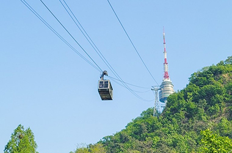
남산 타워 & 케이블카
서울 제1의 관광명소 남산타워를 한눈에 조망할 수 있는 남산케이블카
서울특별시 용산구 남산공원길 105
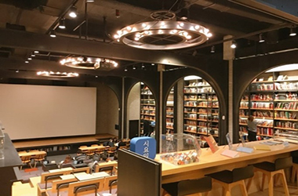
CGV 씨네 라이브러리
국내 최초 영화 전문 도서관과 아트하우스를 갖춘 도심 한복판 문화공간
서울특별시 중구 퇴계로 123 10층, 11층
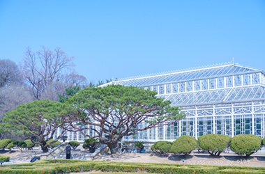
창경궁 대온실
서울의 4대 고궁 중 하나인 창경궁 내부에 위치한 대한민국 최초의 대온실
서울특별시 종로구 창경궁로 185
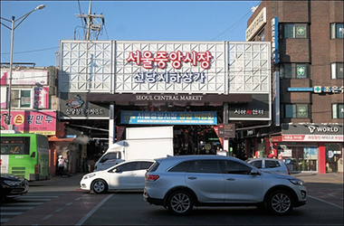
서울 중앙시장
곳곳의 옛 감성이 담긴 시장의 골목 풍경과 특색 있는 먹거리들이 반긴다
서울특별시 중구 퇴계로 85길 36
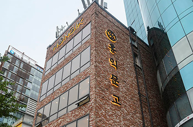
홍익문고
1957년 노점에서 시작해 오랜 추억을 간직한 신촌의 대표 서점
서울특별시 서대문구 연세로 2
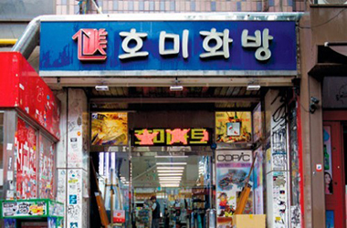
호미화방
약 50여 년 동안 홍대 앞을 지키며 한국 미술이 발전하는 데 큰 역할을 했다고 평가받는 곳
서울특별시 마포구 홍익로 3길 20 1층
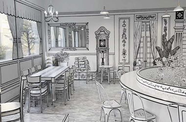
그림 카페
인테리어부터 식기류까지 마치 만화 속에 들어온 듯한 느낌이 들게 만드는 색다른 매력의 그림카페
서울특별시 마포구 성미산로 161-10
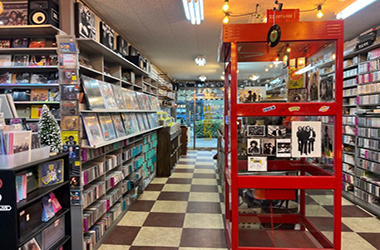
서울레코드
1976년부터 운영 중이며, LP, CD, 카세트테이프 등 다양한 형태의 음반을 구비하고 있는 음반가게
서울특별시 종로구 종로 154
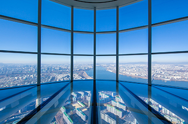
서울스카이
국내 최고 높이의 롯데월드 타워 가장 높은 곳에 위치한 서울스카이 전망대
서울특별시 송파구 올림픽로 300
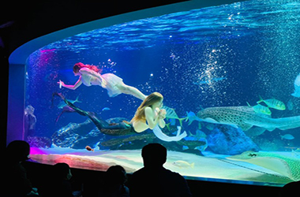
아쿠아플라넷 63
다양한 해양생물과 아쿠아 퍼포먼스를 함께 즐길 수 있는 아쿠아리움
서울특별시 영등포구 63로 50
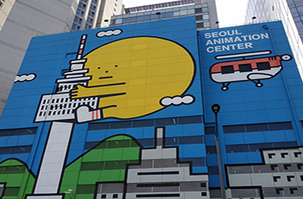
서울애니메이션센터
서울애니메이션센터는 '만화의집'과 '애니소풍'으로 이루어진 도심 속 복합 문화체험공간이다
서울특별시 중구 소공로 48 1층, 2층